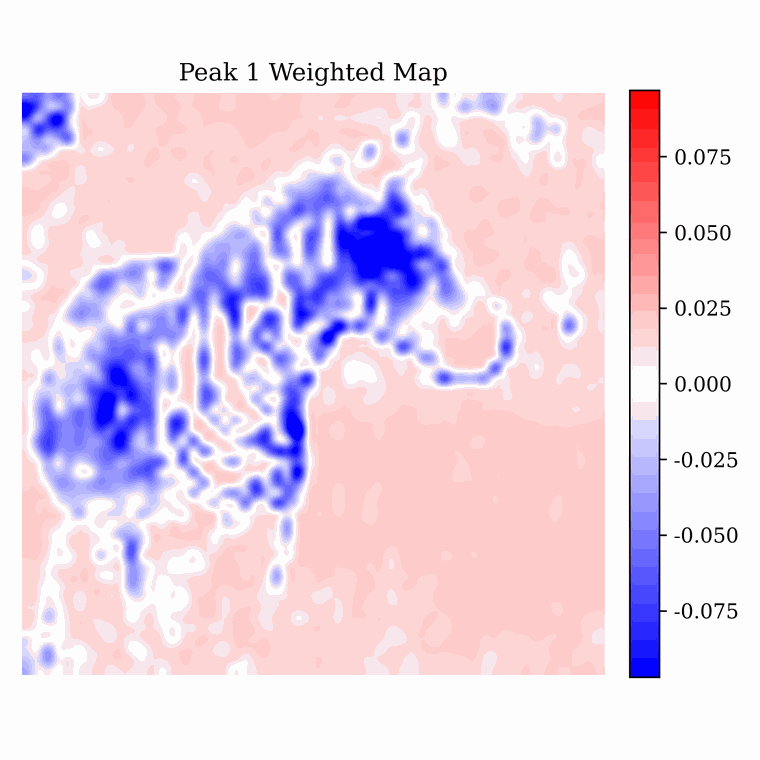
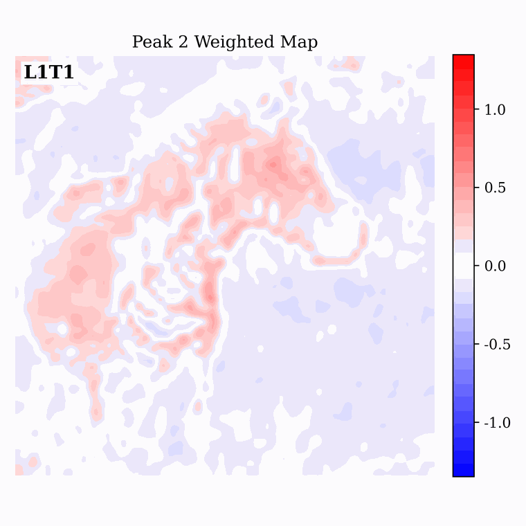
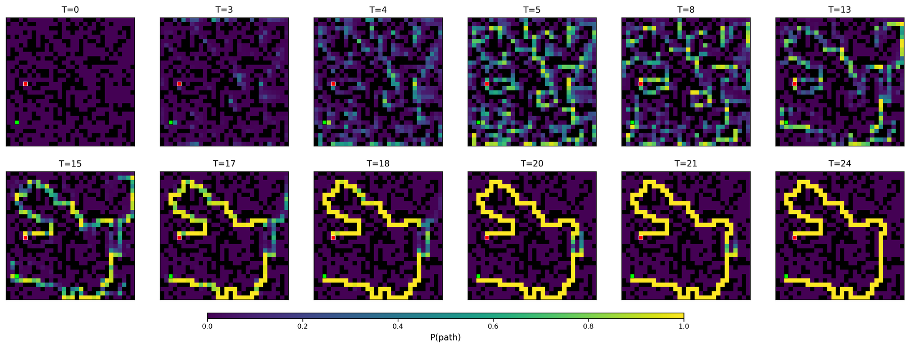

Winfree Oscillatory Neural Networks. WONN evolves neural representations on the toroidal phase space $(S^1)^d$. Through generalized Winfree synchronization dynamics, oscillators self-organize into structured collective states for both visual perception and reasoning tasks.
Introduction
Standard neural networks are often described as a sequence of static feature transformations. WONN takes a different view: computation is the collective evolution of interacting dynamical states. Each scalar oscillator carries a phase variable on the circle, and a population of such oscillators evolves on a high-dimensional torus. The model repeatedly updates these phases through Winfree-type interactions, allowing representations to synchronize, separate into phase groups, and refine toward task-relevant collective configurations.
Unlike Kuramoto-type models, whose interaction is primarily governed by pairwise phase differences, Winfree dynamics decompose interaction into a receiver sensitivity $S(\theta_i)$ and a sender influence $I(\theta_j)$. This sensitivity-influence structure gives WONN a more expressive interaction mechanism: it can break global phase-shift symmetry, use either fixed trigonometric or learnable interaction functions, and support local, global, or grouped coupling mechanisms.
95.26%
CIFAR-10 accuracy
Best WONN result in the trigonometric setting, using 11.84M parameters.
76.78%
ImageNet-1K accuracy
Large-scale image classification with 12.28M parameters.
80.1%
Maze-hard accuracy
Energy voting with only 0.396M parameters.
Winfree Oscillatory Mechanism
Left: A Winfree oscillatory neuron with phase $\theta$, natural frequency $\omega$, sensitivity $S(\theta)$, and influence $I(\theta)$. Right: Grouped sensitivity-influence mechanism for hierarchical local synchronization.
Let $\theta_i$ denote the phase of oscillator $i$, $\omega_i$ its natural frequency, $S(\theta_i)$ the receiver-side sensitivity, $I(\theta_j)$ the sender-side influence, and $c_{ij}$ the coupling weight from oscillator $j$ to oscillator $i$. The continuous-time Winfree form is
$$\dot{\theta}_i = \omega_i + S(\theta_i)\sum_j c_{ij} I(\theta_j).$$
WONN discretizes this update and embeds it into neural layers. Each Winfree dynamics layer performs $T$ recurrent phase updates with shared parameters, followed by a layer-transition module that updates both the phase state $\Theta$ and the natural-frequency state $\Omega$.
Network with WONN

Overview of the WONN architecture. Inputs are encoded into an initial frequency state, while phases are initialized on the circle. Stacked Winfree dynamics layers iteratively synchronize the phase representation before producing the final prediction.
Architecture intuition. Within a layer, recurrent Winfree updates perform fast oscillatory refinement. Across layers, transition modules update the slow feature state, enabling hierarchical computation. The resulting architecture combines geometric phase dynamics with neural coupling operators such as attention or convolution.
Experimental Results
Image classification results on CIFAR-10/100. ViT models marked with $\dagger$ are trained with additional regularization; other models follow a plain training protocol.
| Models | CIFAR-10 Acc. | CIFAR-10 Params | CIFAR-100 Acc. | CIFAR-100 Params |
|---|
| ResNet-18 | 93.48 ± 0.16 | 11.17M | 70.53 ± 0.10 | 11.22M |
| ResNet-50 | 94.22 ± 0.14 | 23.52M | 73.54 ± 0.41 | 23.71M |
| ViT-T† | 90.34 ± 0.18 | 5.36M | 67.59 ± 0.44 | 5.38M |
| ViT-S† | 93.43 ± 0.29 | 21.34M | 71.18 ± 0.62 | 21.38M |
| ViT-B† | 92.04 ± 0.25 | 85.15M | 71.05 ± 0.40 | 85.22M |
| AKOrNattn | 93.66 ± 0.17 | 4.60M | 72.03 ± 0.34 | 4.62M |
| $S(\theta_i)$ and $I(\theta_i)$ as MLPs |
| WONN (Ch=128→128) | 94.55 ± 0.09 | 3.08M | 73.77 ± 0.40 | 3.09M |
| WONN (Ch=64→256) | 95.12 ± 0.04 | 7.54M | 75.12 ± 0.49 | 7.56M |
| WONN (Ch=256→256) | 95.24 ± 0.12 | 12.02M | 76.20 ± 0.45 | 12.04M |
| $S(\theta_i)$ and $I(\theta_i)$ as trigonometric functions |
| WONN (Ch=128→128) | 94.50 ± 0.15 | 2.98M | 74.48 ± 0.16 | 3.00M |
| WONN (Ch=64→256) | 95.08 ± 0.07 | 7.40M | 75.81 ± 0.33 | 7.43M |
| WONN (Ch=256→256) | 95.26 ± 0.05 | 11.84M | 76.17 ± 0.52 | 11.86M |
Image classification results on ImageNet-100 and ImageNet-1K.
| Models | ImageNet-100 Acc. | ImageNet-100 Params | ImageNet-1K Acc. | ImageNet-1K Params |
|---|
| ResNet-18 | 78.20 | 11.23M | 69.73 | 11.69M |
| ResNet-50 | 81.18 | 23.71M | 76.89 | 25.56M |
| ViT-S-16† | 77.96 | 21.70M | 75.54 | 22.05M |
| ViT-B-16† | 76.36 | 85.87M | 75.85 | 86.57M |
| AKOrNattn | 80.08 | 4.62M | 67.45 | 4.85M |
| $S(\theta_i)$ and $I(\theta_i)$ as MLPs |
| WONN (Ch=128→128) | 81.50 | 3.09M | -- | -- |
| WONN (Ch=64→256) | 82.04 | 7.56M | 74.84 | 7.79M |
| WONN (Ch=256→256) | 82.88 | 12.05M | 76.78 | 12.28M |
| $S(\theta_i)$ and $I(\theta_i)$ as trigonometric functions |
| WONN (Ch=128→128) | 81.76 | 3.00M | -- | -- |
| WONN (Ch=64→256) | 82.56 | 7.43M | -- | -- |
| WONN (Ch=256→256) | 82.22 | 11.87M | -- | -- |
Maze-hard pathfinding results. Energy Voting selects the solution with the lowest energy among 32 independently sampled trajectories.
| Models | Accuracy (%) | Parameters |
|---|
| LLMs |
| DeepSeek R1 | 0.0 | 671B |
| Claude 3.7 8K | 0.0 | ? |
| O3-mini-high | 0.0 | ? |
| Recurrent models |
| HRM | 74.5 | 27M |
| TRM-Att (dihedral augmented) | 85.3 | 7M |
| TRM-MLP (dihedral augmented) | 0.0 | 19M |
| Other synchrony-based model |
| AKOrNattn | 36.2 | 1M |
| $S(\theta_i)$ and $I(\theta_i)$ as trigonometric functions |
| WONN | 76.2 | 0.396M |
| WONN (Energy Voting) | 80.1 | 0.396M |
Sudoku solving results. WONN follows the standard setting and reports average results over five runs.
| Models | Accuracy (%) | Parameters |
|---|
| SAT-Net | 98.3 | 0.618M |
| RRN | 99.8 | 0.201M |
| R-Transformer | 100.0 | 0.211M |
| Transformer | 98.6 ± 0.3 | 16.87M |
| HRM | 99.7 ± 0.2 | 27.28M |
| AKOrNattn (T=16) | 99.8 ± 0.1 | 2.98M |
| $S(\theta_i)$ and $I(\theta_i)$ as trigonometric functions |
| WONN (T=16) | 100.0 ± 0.0 | 1.58M |
Layer Dynamics in Image Recognition

Final phase distribution in WONN on image recognition tasks. The phase variables exhibit a characteristic bimodal distribution, with two dominant peaks approximately separated by $\pi$. Weighted activation maps show that the two modes capture complementary object structures.

Layer dynamics for the first synchronized phase peak.

Layer dynamics for the second synchronized phase peak.
Maze-hard Synchronous Path Formation
WONN does not construct a path greedily. In the early stage, the model produces multiple diffuse candidate fragments. As the recurrent dynamics evolve, compatible fragments reinforce one another, inconsistent branches are suppressed, and a coherent path emerges from start to goal.

Example 1: probability dynamics.

Example 2: branch suppression.

Example 3: coherent path emergence.

Static probability panels from Maze-hard. Each panel shows the predicted per-cell path probability at a recurrent step.
Energy as a Test-time Selection Signal

Energy behavior on Maze-hard. The interaction energy is not assumed to be a global Lyapunov function for the full neural architecture; instead, it provides a useful diagnostic and a practical test-time selection criterion.
For the trigonometric Winfree core under suitable symmetry assumptions, the interaction term admits an energy structure. In Maze-hard, sampling 32 independent trajectories and selecting the lowest-energy final state improves accuracy from 76.2% to 80.1%. This suggests that the dynamical state carries useful internal confidence information beyond the raw prediction.
BibTeX
Replace this BibTeX after the paper is public.
@article{wonn2026,
title = {Winfree Oscillatory Neural Networks},
author = {Anonymous Authors},
journal = {NeurIPS Submission},
year = {2026}
}